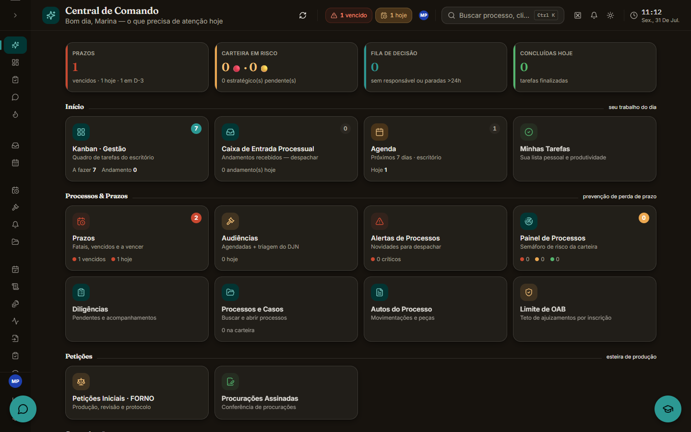
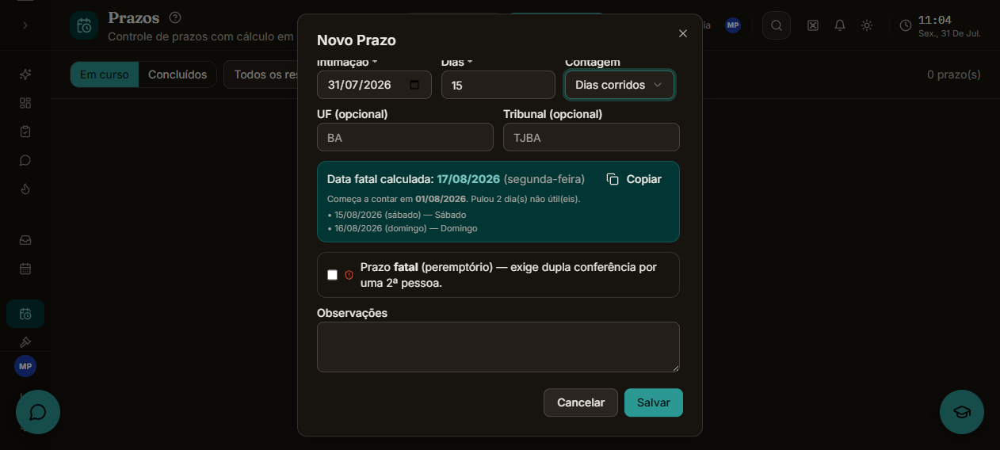
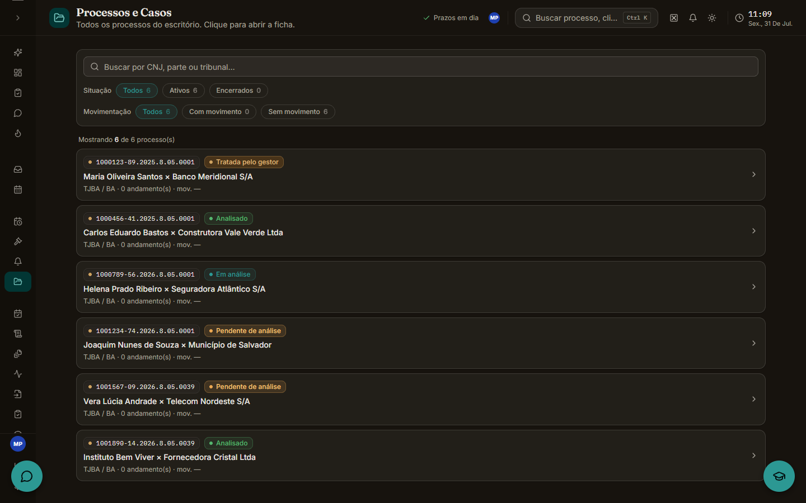
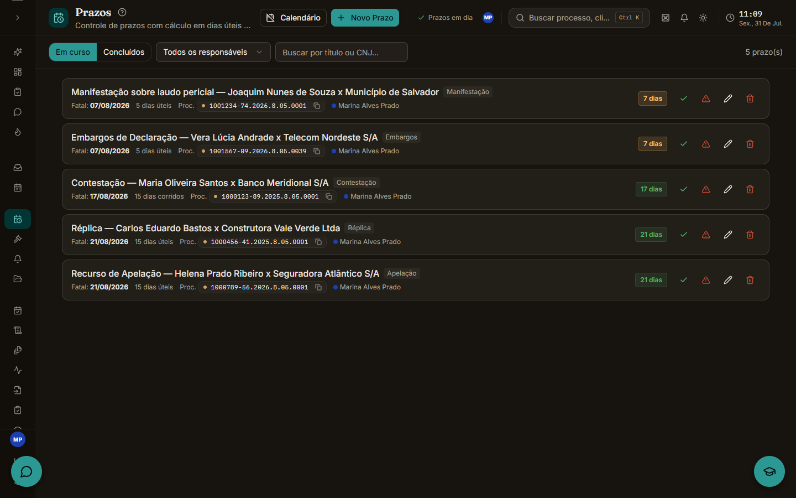
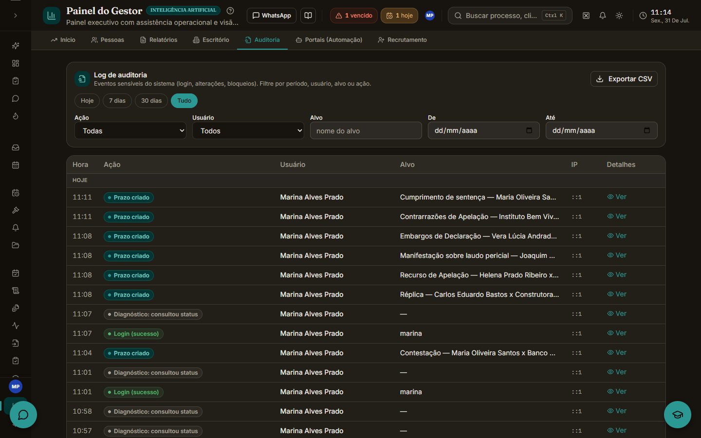

JVB: ERP jurídico sob medida
Do WhatsApp na planilha ao sistema único: captação, processos, prazos, petições, financeiro e IA num só produto, em produção e em uso diário.

O problema
Um escritório de advocacia de pequeno porte operava como opera quase todo escritório pequeno: planilha para os processos, WhatsApp para o atendimento, e-mail para os prazos e um SaaS jurídico genérico para o resto. A mesma informação era digitada em quatro lugares, prazo aparecia tarde, lead sumia no meio da conversa pessoal, e ninguém respondia rápido a "como está o processo do fulano?".
Faltava ferramenta que conhecesse o fluxo inteiro do escritório. Lead chega pelo WhatsApp, vira cliente, vira processo, gera prazo, audiência, petição e honorário. Cada software cobria um pedaço desse caminho e nenhum cobria a costura entre os pedaços, que é onde a informação se perdia.
A decisão
Construir um sistema só, com banco só e login só, que seguisse o funil inteiro em vez de virar mais uma ilha. tRPC com Zod para o tipo ser compartilhado entre cliente e servidor, de modo que renomear um campo estoure no build antes de estourar na produção. Drizzle para ter SQL de verdade quando o domínio pede. Railway com uma réplica só, porque escala especulativa num escritório de cinco pessoas só gera custo.
E uma camada própria de IA multi-provedor, para que trocar de modelo virasse uma linha de configuração em vez de uma decisão de arquitetura.
A escala
O sistema cobre captação, processos, prazos e audiências, petições, inteligência sobre diários oficiais, financeiro e gestão de permissões, com auditoria de ações, 2FA e cofre de credenciais. Tudo construído, mantido e suportado por uma pessoa.
Contar prazo é mais difícil do que parece
O CPC conta prazo em dias úteis (art. 219), exclui o dia do começo (art. 224), prorroga vencimento em dia não útil (art. 224, §1º) e suspende tudo no recesso forense de 20/12 a 20/01 (art. 220). "Dia útil" ainda inclui feriado móvel derivado da Páscoa, feriado forense e feriado específico de cada tribunal.
Escrevi um motor puro, sem biblioteca de calendário, com toda a aritmética em UTC ao meio-dia para eliminar bug de fuso e horário de verão. A Páscoa vem pelo algoritmo de Meeus/Jones/Butcher, cada regra coberta por teste. É o código mais testado do sistema: ninguém elogia código que conta feriado, mas se ele erra um dia o cliente perde o processo.
// Datas são strings ISO "YYYY-MM-DD". Toda a aritmética é feita em UTC ao meio-dia
// para evitar problemas de fuso/horário de verão.
function toUtcNoon(iso: string): Date {
return new Date(`${iso}T12:00:00Z`);
}
// ...
// Motivo de um dia não ser útil (ou null se for útil). Considera, na ordem:
// fim de semana, recesso forense, feriado forense específico (extra) e feriado
// nacional/forense usual.
function reasonForNonBusinessDay(
d: Date,
extra: Map<string, string>
): string | null {
if (isWeekend(d)) return d.getUTCDay() === 0 ? "Domingo" : "Sábado";
if (isInRecess(d)) return "Recesso forense (20/12–20/01)";
const iso = formatISO(d);
if (extra.has(iso)) return extra.get(iso) || "Feriado forense";
const names = holidayNamesForYear(d.getUTCFullYear());
if (names.has(iso)) return `Feriado: ${names.get(iso)}`;
return null;
}
O escritório conversa com o sistema
O ERP expõe um servidor MCP com 67 ferramentas, 46 de leitura e 21 de escrita. Na prática o advogado abre o Claude e pergunta "o que eu tenho pra hoje?", "cadastra esse prazo", "resume essa conversa". Quem executa é o sistema, com a permissão da pessoa que perguntou, e cada chamada fica registrada.
A parte trabalhosa foi a autenticação. Para o claude.ai conectar como Custom Connector não bastava uma chave de API: precisava de um servidor OAuth 2.1 de verdade, com registro dinâmico de cliente, código de autorização, refresh e uma tela de consentimento própria, que é onde a pessoa vê o que está autorizando antes de autorizar.
Aí veio a decisão que dá medo. O dono quis que o Claude enviasse mensagem no WhatsApp direto, sem passar por rascunho. Isso muda o teto de dano: deixa de ser "nada sai do sistema". Um modelo em loop, com um erro de raciocínio, vira dezenas de mensagens no celular de cliente real.
O que segura o envio são três guardas, cada uma contra um jeito diferente de dar errado. Quem manda é revalidado na hora, e essa checagem falha fechada: sem confirmar que ainda é gestor ativo, não envia. As leituras do conector falham abertas de propósito, porque ali um soluço de banco não deve derrubar nada, mas aqui o efeito é externo e não tem volta. A segunda é um teto diário de envios. A terceira é idempotência, e ela não usa tabela de chave: a própria conversa é a fonte da verdade, então mensagem igual, no mesmo lugar, dentro de uma janela curta, é retry e não sai de novo.
As ferramentas que chamam modelo (transcrever áudio, resumir conversa) têm outro problema e outro disjuntor. Ele soma o custo real em dólar das últimas 24 horas e recusa quando estoura, com uma contagem de chamadas embaixo como rede: o registro de custo é fire-and-forget e pode faltar, e sem essa rede uma falha de gravação abriria o disjuntor inteiro.
O que roda sem ninguém mandar
São 307 arquivos de teste e mais de 3.500 casos entre unitário e integração, no Vitest, mais dois testes de fumaça em Playwright que sobem o sistema de verdade.
No GitHub Actions rodam duas coisas. A primeira é uma varredura de segredo a cada push e a cada pull request: se chave de API, senha ou string de conexão entrar no diff, o check falha e aquilo não alcança a branch principal.
A segunda acorda às três da manhã, quando não tem ninguém no sistema: dump do banco inteiro, anexos incluídos, cifrado em AES-256 e enviado para fora da infraestrutura, com trinta dias de retenção. Isso não é zelo, é obrigação. São dados sigilosos de cliente de escritório de advocacia, e a LGPD não aceita "a plataforma devia ter backup".
Eu não entendo nada de Direito
Sou o único desenvolvedor do projeto e quase nada aqui foi decidido sozinho. Eu não sabia o que torna um prazo peremptório, por que uma petição pede conferência de uma segunda pessoa, ou o que faz um processo virar urgente antes de vencer. Quem sabia era a equipe que ia usar o sistema todo dia.
Então cada módulo saiu de conversa: eu levava a proposta, eles diziam onde ela não sobrevivia à rotina real, e a tela mudava antes de virar código. Escrever o software foi a parte fácil. A difícil foi construir junto com quem entende do assunto e aceitar que a minha primeira versão quase sempre precisava passar por eles para virar alguma coisa que alguém fosse realmente usar.
O healthcheck que envenenou o banco
Um incidente real. O sistema aprendia a própria URL pública a partir do
primeiro request depois do deploy, e o primeiro request depois do deploy é
o healthcheck da plataforma, com um Host que não resolve
publicamente. Resultado: links de anexo gravados apontando para um host que
não existe.
O diagnóstico saiu do sintoma ("anexo não abre") até a causa raiz, e a correção foi um guard na origem mais um reparo idempotente no boot para os dados que já estavam gravados errados. O usuário reportou como falha do produto uma coisa que aconteceu na camada de infraestrutura.
Fazer menos, de propósito
Todo adiamento do projeto tem gatilho escrito: virtualizar a lista de mensagens só acima de ~1.500 mensagens, mover mídia para bucket só quando o volume justificar. Um escritório de cinco pessoas não paga a conta de arquitetura de SaaS, e o maior risco de um desenvolvedor único é construir para um problema que nunca chega.
Foi o primeiro projeto em que eu fui produto e engenharia ao mesmo tempo, com usuário real do outro lado que perde dinheiro se eu errar. Trabalhando sozinho, eu gastei mais energia decidindo o que deixar de fora do que escolhendo a stack. E boa parte do trabalho nem foi programar: foi entender o CPC, o processo eletrônico e a rotina do escritório o suficiente pra traduzir tudo isso em tela.


